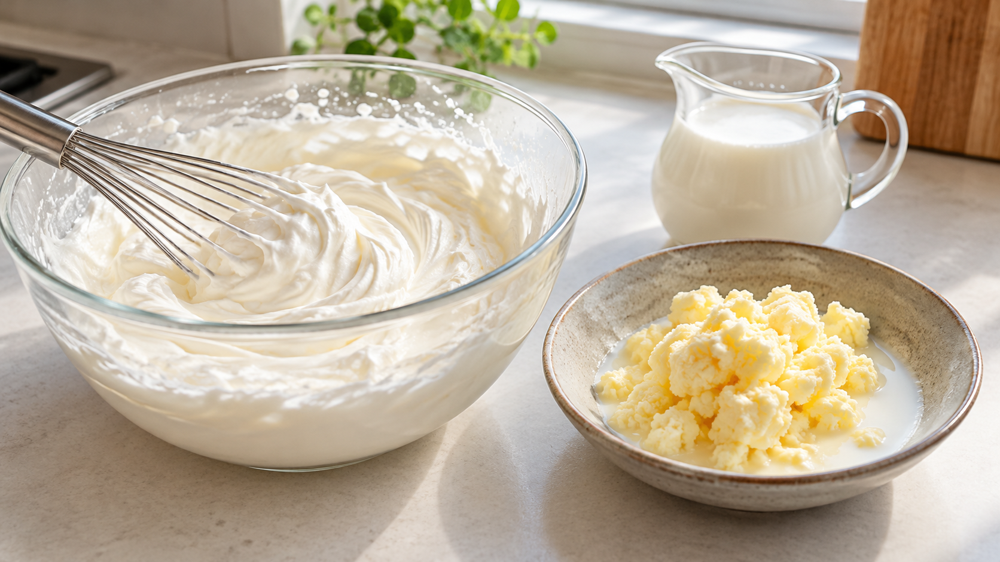

生クリームを泡立てすぎるとバターになる｜脂肪球の膜が壊れる瞬間
ケーキに塗る生クリームを泡立てていたら、なめらかだった表面が急にぼそぼそしてきた。さらに混ぜると、黄色っぽい粒と白い液体が見えてくる。何が起きたのだろう。
生クリームは、泡立てを続けると乳脂肪が集まり、バターのような固形分と液体に分かれることがある。 ケーキ用なら、泡立て器の跡が残り始めたところから様子を見て止めよう。
生クリームには、ごく小さな脂肪の粒が水分の中に散らばっている。粒は薄い膜に包まれている。ほどよく泡立てると、脂肪の粒が取り込んだ空気を支え、ふんわりしたクリームになる。さらに混ぜ続けると粒どうしがより強く集まり、泡がしぼんで固形分と液体に分かれていく。
クリームを混ぜる過程を調べた資料では、脂肪の粒が集まってバターの粒になり、液体と分かれる変化が確認されている。泡立てを続けたときに泡が崩れることも確かめられている。つまり、ふんわりしたクリームとバター状の塊は、同じ乳脂肪の集まり方が違う状態だ。
家庭では、ケーキに使うなら泡立て器の跡がうっすら残ったらミキサーを低速にし、固さを見ながら止めると扱いやすい。一方、砂糖を加える前の乳脂肪のクリームが分離したなら、傷んでいないことを確かめ、集まった固形分をパンに塗ったり、料理に使ったりできる。これは研究で家庭の仕上がりを保証した方法ではなく、分離の仕組みを使う調理上の考え方だ。
冷たいクリームから作る、小さな自家製バター
材料は、表示が「種類別クリーム」で乳脂肪分40%以上の生クリーム100ml。好みで塩を少量使う。清潔な、ふた付きの500mlほどの容器も用意する。
- 生クリームを使う直前まで冷蔵庫で冷やす。容器を洗ってよく乾かし、クリームを入れてふたを閉める。
- 容器を上下に振る。重く感じる段階を過ぎ、黄色みのある固形分と白い液体が見えてくるまで続ける。作業中に温まったら、容器を氷水に当てて冷やす。かかる時間は製品や温度で変わるので、分数ではなく見た目を目安にする。
- 分かれたら振るのをやめ、清潔なスプーンで固形分を取り出す。好みで塩を少量混ぜ、清潔な容器に入れて冷蔵し、早めに食べる。
余った生クリームの使い道を考えるときも、この違いが役立つ。砂糖を加えていない種類別クリームなら、ソースやスープに使うほか、冷やして振って固形分を取り出す選択がある。砂糖入りのホイップや植物性の製品、傷んだクリームに同じ仕上がりを期待しない。
泡立ての途中で止めればケーキ用のふんわりしたクリーム。さらに混ぜて分かれたら、バター状の固形分。次に泡立てるときは、時間よりも表面と固さの変化を見よう。